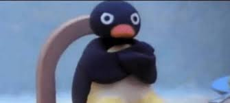

Olá
Qual seu nome?
Gosta do desenho do Pingu?
Selecione uma opção
Sim
Não
Nunca assisti
Começar Quizz
O que você gosta de fazer no fim de semana?
Pescar
Ficar com a minha família
Ir para o circo
Dormir
Qual sua comida preferida?
Sushi
Bolo
Pizza
Batata com milkshake
Em uma festa você...
Gosta de dançar
Prefiro nem ir
Aproveitar as comidas
Ouvir pinkfloyd enquanto assisto o mágico de Oz
Qual seu hobby preferido?
Tocar música
Nadar
Ler
Jogar

Tome aqui seu resultado
Erro